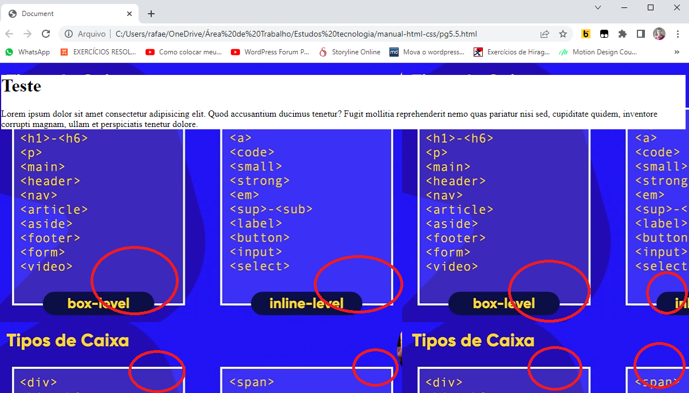

[background] [Border] [display] shorthand
Página inicial
[background-imagem: url();] - Essas imagens adicionadas no background-image tem apenas função estética, não possuem função semântica.
Imagem externa - basta colocar o link, porém lembre-se que caso a imagem saia do ar ela irá sumir tambem do site.
[background-size] - a mudança no tamanho da imagem por CSS não altera o tamanho do arquivo original.
[background-repeat] - O padrão é repetir
Repetição de imagem - Por padrão a imagem é jogada em seu tamanho original e caso seja menor ela será copiada várias vezes até completar todo o
espaço, caso ela seja maior ela será cortada.
Os tipos de background
1- background-color ;
2- background-image: linear-gradient();
3- background-image: url();
4- background-repeat: ;
5- background-size: ;
6- background-position: ;
-----------------------------------
1- background-color ;
#q1{
background-color: rgb(255, 230, 200);
}
-----------------------------------
2- background-image: linear-gradient();
#q2{
background-image: linear-gradient(to right, yellow, blue);
}
-----------------------------------
3- background-image: url();
#q3{
background-image: url(imagens/fotodefundo.png);
}
Usando [background-size]
Usando pixels
Usando 100px de largura e 100px de altura do body.
<style>
body{
background-image: url(imagens/fotodefundo.png);
background-size: 100px 100px;
}
</style>
Usando porcentagem
Usando 100% da largura e 100% da altura do body.
<style>
body{
background-image: url(imagens/fotodefundo.png);
background-size: 100% 100%;
}
</style>
Usando cover
O cover vai cobrir todo o body com a imagem.
Caso1: se a tela for maior: ele expande a imagem para caber no body
Caso2: se a tela for menor: ela diminui a imagem para caber no
Caso3: saiba que o body não é a viewport, para isso teria que configurar a altura do body para ser a viewport.
<style>
body{
background-image: url(imagens/fotodefundo.png);
background-size: cover;
}
</style>
Usando contain
O contain faz com que a imagem apareça de forma completa na tela sem alterar suas dimensões, ou seja, se a tela for menor a imagem será diminuida para caber ali.
<style>
body{
background-image: url(imagens/fotodefundo.png);
background-size: contain;
}
</style>
Usando auto
O auto o navegador que irá ajustar a imagem de acordo com o tamanho dela. Essa aqui é a configuração padrão.
<style>
body{
background-image: url(imagens/fotodefundo.png);
background-size: auto;
}
</style>
Usando [background-repeat]
Por padrão o background-repeat vem como "repeat".
no-repeat
<style>
body{
background-image: url(imagens/fotodefundo.png);
background-repeat: no-repeat;
}
</style>
repeat-x ou repeat-y
<style>
body{
background-image: url(imagens/fotodefundo.png);
background-repeat: repeat-x;
background-repeat: repeat-y; (ou um ou outro)
}
</style>
Usando [background-position]
Por padrão o alinhamento é: left top.
background-position: center center;
background-position: right top;
background-position: right bottom;
background-position: left top;
background-position: left bottom;
Usando [background-attachment]
Attachment significa acessório. Possuindo várias funções acessórios
fixed
A imagem fica fixa, independente da rolagem da pagina.
<style>
body{
background-image: url(imagens/fotodefundo.png);
background-attachment: fixed;
}
</style>
scroll
A imagem rola junto com o conteúdo, é a configuração padrão.
<style>
body{
background-image: url(imagens/fotodefundo.png);
background-attachment: scroll;
}
</style>
background - Shorthand
background shorthand ordem: [color] [imagem] [position]/[size] [repeat] [attachment]
<style>
body{
background: black url('wallpaper002.jpg') center top/cover no-repeat fixed;
}
</style>
------------------------
Aplicação prática:
Página de teste de background
Página de teste de background 2
Mexendo na imagem de fundo
De maneira automática o que acontece cmom uma foto que é colocada no site:
Ela irá ocupar todo o tamanho dela na tela, e, caso seja menor que a tela, ela começará a se repetir para ocupar os espaços vazios sobrando.

[acabar com a duplicação]
background-repeat: no-repeat;
Porém agora a imagem vai ter seu tamanho em sua totalidade, independente do tamanho da tela. Se a tela for maior irá ficar espaços brancos ou ficará cortada se a tela for menor.
Para evitar isso podemos usamos:
background-size: 100%;
background-size: 100% 100%; (para largura e comprimento)
Observe que agora com esse comando a imagem no body deve opupar 100% do body que vai até um pouco abaixo do main.
A parte restante branca da página é chamada de [viewport]
body e viewport
height: 100vh; (ajuste para a altura ocupar 100 da viewport)
Posso aplicar no body.
Porém a imagem agora se mexe. Conforme vou diminuindo a página, ela desloca.
Porém agora a foto vai distorcer.
Aqui uma consequência é o fundo ficar preto dependendo do tamanho da tela.
[tela inteira]
background-repeat: no-repeat;
background-size: 100%;